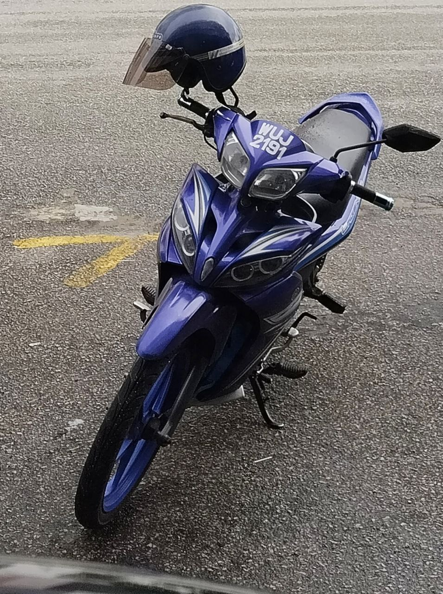
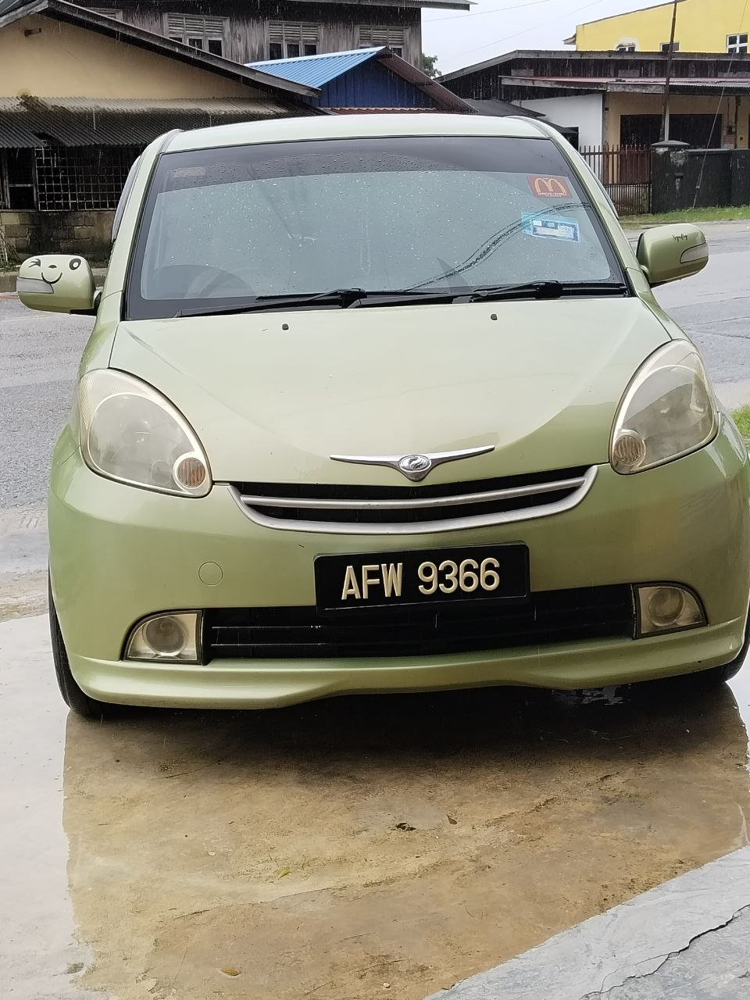

| Name |
MUHAMMAD SYAFIQ BIN ZULKIFLI |
| Student ID |
2022622924 |
| Date of birth |
25/03/1999 |
| Education |
SECONDARY SCHOOL - SMK KETEREH |
| DIPLOMA - ACCOUNTING (UiTM MACHANG) |
| BACHELOR'S DEGREE - FINANCE (UiTM KOTA BHARU) |
| Alamat |
PT 2103 TAMAN DESA PETALING, KOK LANAS, 16450 KETEREH, KOTA BHARU, KELANTAN. |
| Alamat Surat Menyurat |
| Casual picture of me |
|
| MY DAILY RIDE |
 |
|  |
As you can see below, currently I'm studying at UiTM Campus Kota Bharu as a student in bachelor's degree of Finance in class BA242 4B. One of the course that I must study is Basic Web Design & Content Management which is IMS456. I usually go to class using my brother's motorcycle as it is easy to maneuver around the city but I also use my car in the raining season to protect myself and my laptop.